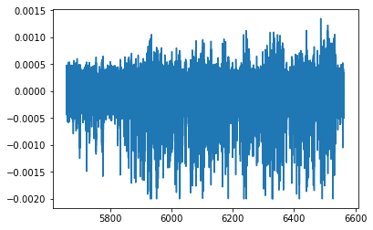
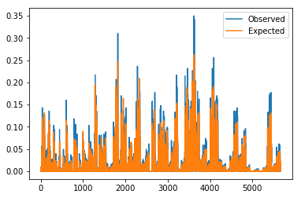
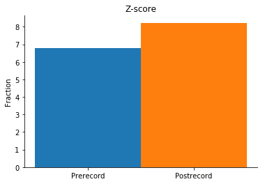

# Tutorial 06 - Pairwise co-occurrence¶
# Goals¶
- Implement an analysis of pairwise co-occurrence during sharp-wave ripple events
- Apply a permutation test (shuffle) to determine levels of chance co-occurrence
# Compute pairwise co-occurrence during SWRs¶
In [1]:
# Import necessary packages
%matplotlib inline
import os
import sys
import numpy as np
import nept
import matplotlib.pyplot as plt
import scipy.signal
# Define where your data folder is located
data_path = os.path.join(os.path.abspath('.'), 'data')
data_folder = os.path.join(data_path, 'R042-2013-08-18')
In [2]:
# Load the info file, which contains experiment-specific information
sys.path.append(data_folder)
import r042d3 as info
In [3]:
# Determine times of interest
# Here let's compare the co-occurrence during prerecord and postrecord
prerecord_start = info.task_times['prerecord'].start
prerecord_stop = info.task_times['prerecord'].stop
postrecord_start = info.task_times['postrecord'].start
postrecord_stop = info.task_times['postrecord'].stop
In [4]:
# Load spikes (.t and ._t) from this experiment
spikes = nept.load_spikes(data_folder)
# Restrict the spikes to the prerecord
spikes_pre = [spiketrain.time_slice(prerecord_start, prerecord_stop) for spiketrain in spikes]
# Restrict the spikes to the postrecord
spikes_post = [spiketrain.time_slice(postrecord_start, postrecord_stop) for spiketrain in spikes]
# Plot the spikes
for idx, spiketrain in enumerate(spikes_pre):
plt.plot(spiketrain.time, np.ones(len(spiketrain.time))+idx, '|')
plt.show()
# Plot the spikes
for idx, spiketrain in enumerate(spikes_post):
plt.plot(spiketrain.time, np.ones(len(spiketrain.time))+idx, '|')
plt.show()
# Print the number of neurons we're working with
print('n_neurons:', len(spikes))


n_neurons: 107
In [5]:
# Load LFP with good sharp-wave ripples
lfp = nept.load_lfp(os.path.join(data_folder, info.lfp_swr_filename))
# Restrict the LFP to the prerecord
lfp_pre = lfp.time_slice(prerecord_start, prerecord_stop)
# Restrict the LFP to the postrecord
lfp_post = lfp.time_slice(postrecord_start, postrecord_stop)
# Plot the LFP during the prerecord
plt.plot(lfp_pre.time, lfp_pre.data)
plt.show()
# Plot the LFP during the postrecord
plt.plot(lfp_post.time, lfp_post.data)
plt.show()


In [6]:
# Find sharp-wave ripple (SWR) epochs
swr_thresh = (140., 250.)
z_thresh = 3.0
power_thresh = 5.0
merge_thresh = 0.02
min_length = 0.01
swrs_pre = nept.detect_swr_hilbert(lfp_pre,
fs=info.fs,
thresh=swr_thresh,
z_thresh=z_thresh,
power_thresh=power_thresh,
merge_thresh=merge_thresh,
min_length=min_length)
swrs_post = nept.detect_swr_hilbert(lfp_post,
fs=info.fs,
thresh=swr_thresh,
z_thresh=z_thresh,
power_thresh=power_thresh,
merge_thresh=merge_thresh,
min_length=min_length)
print('Number of prerecord SWRs:', swrs_pre.n_epochs)
print('Number of postrecord SWRs:', swrs_post.n_epochs)
Number of prerecord SWRs: 432
Number of postrecord SWRs: 413
In [7]:
# Filter the SWR epochs to only those with a certain minimum number of neurons involved
min_involved = 4
swrs_pre = nept.find_multi_in_epochs(spikes_pre, swrs_pre, min_involved=min_involved)
swrs_post = nept.find_multi_in_epochs(spikes_post, swrs_post, min_involved=min_involved)
print('Number of prerecord SWRs:', swrs_pre.n_epochs)
print('Number of postrecord SWRs:', swrs_post.n_epochs)
Number of prerecord SWRs: 406
Number of postrecord SWRs: 403
In [8]:
# Filter and bin spikes to those that occur during the swrs
counts_swr_pre = nept.spike_counts(spikes_pre, swrs_pre)
counts_swr_post = nept.spike_counts(spikes_post, swrs_post)
# Verify that counts_swr is shape (n_neurons x n_swrs)
print('Shape of prerecord counts_swr_pre:', counts_swr_pre.shape)
print('Shape of postrecord counts_swr_post:', counts_swr_post.shape)
Shape of prerecord counts_swr_pre: (107, 406)
Shape of postrecord counts_swr_post: (107, 403)
In [9]:
# Make a mask for the neurons recorded from the same tetrode
tetrode_mask = nept.get_tetrode_mask(spikes)
In [10]:
# Compute the pairwise co-occurrence
probs_pre = nept.compute_cooccur(counts_swr_pre, tetrode_mask, num_shuffles=100)
probs_post = nept.compute_cooccur(counts_swr_post, tetrode_mask, num_shuffles=100)
print(probs_pre.keys())
dict_keys(['shuffle', 'active', 'observed', 'expected', 'zscore'])
In [11]:
for probs in [probs_pre, probs_post]:
plt.plot(probs['observed'])
plt.plot(probs['expected'])
plt.legend(['Observed', 'Expected'])
plt.show()


In [12]:
# Make a function to plot the pairwise co-occurrence
def plot_cooccur(pre, post, title):
fig, ax = plt.subplots()
ind = np.arange(1)
width = 0.5
ax.bar(ind, pre, width)
ax.bar(ind + width, post, width)
ax.set_xticks([ind, ind+width])
ax.set_xticklabels(['Prerecord', 'Postrecord'])
ax.spines['right'].set_visible(False)
ax.spines['top'].set_visible(False)
plt.title(title)
plt.ylabel('Fraction')
plt.show()
In [13]:
# Plot the weighted neuron participation during candidate events
# e.g. how active individual neurons are during the pre- and postrecord SWRs
active_pre = np.nansum(probs_pre['active']) / swrs_pre.n_epochs
active_post = np.nansum(probs_post['active']) / swrs_post.n_epochs
title = 'Active'
plot_cooccur(active_pre, active_post, title)

In [14]:
# Plot the weighted joint probability for neuron pairs
observed_pre = np.nansum(probs_pre['observed']) / swrs_pre.n_epochs
observed_post = np.nansum(probs_post['observed']) / swrs_post.n_epochs
title = 'Observed'
plot_cooccur(observed_pre, observed_post, title)

In [15]:
# Plot the weighted z-score coactivity
# e.g. are neurons co-occurring more often than expected by chance?
zscore_pre = np.nansum(probs_pre['zscore']) / swrs_pre.n_epochs
zscore_post = np.nansum(probs_post['zscore']) / swrs_post.n_epochs
title = 'Z-score'
plot_cooccur(zscore_pre, zscore_post, title)
